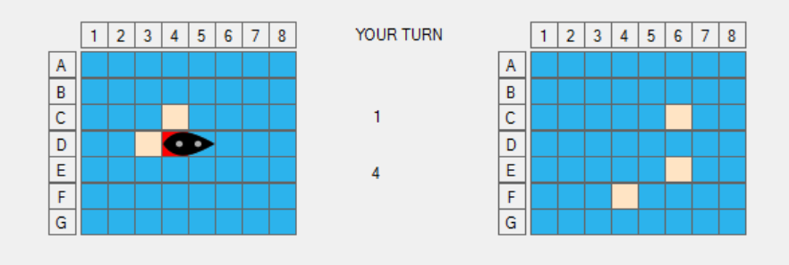
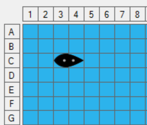
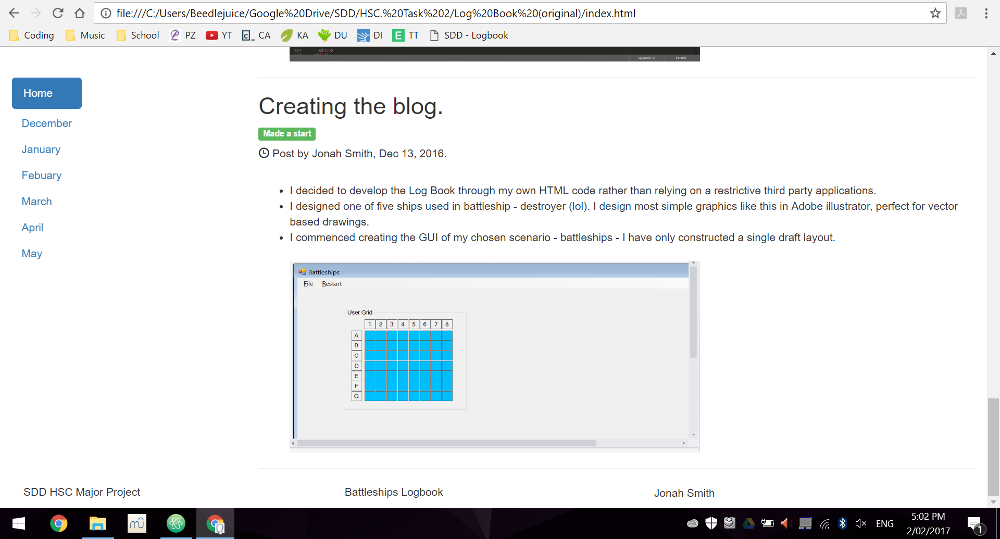

I developed a way to calculate the coordinates of pictureBoxes within panels. To do this I use the method mentioned in the previous post but first subtract the pictureBox from the panel holding it. Furthermore I developed multiple modules which add battle functionality to the game, the user can interact with the actual game and the computer has basic responses and bot elements in playing against its human counterpart. Now, it is only able to randomly select a square to target which will be determined as hit or miss. It does this by accessing the array of coordinates which I have stored of the ships and grid elements then simply changing their properties to simulate either a hit or miss. However, the computer is only able to randomly select a square at this stage, my next task will be to create more complex algorithms for it to find patterns in hit squares.

Containers
Post by Jonah Smith, Dec 30, 2016.
I have developed a system for mapping the picture boxes onto an array representing them. To do this I simply subtract the require box from the very first box and then divide it by its width for X and height for Y. The rule looks something like this: [x = (picWater01.Left – picWater00.Left) / 20], [y = (picWater10.Bottom– picWater00.Top) / 19]. Additionally, I worked on creating a module which allows the user to select a boat and then move it with the arrow keys.I started working on a module which tracks the coordinates of each ship and element within it. I decided to put picture boxes within a panel to make up a ship but accessing certain properties of the pic boxes has provided problems related to containers. For example, when finding all controls in the controls collection, VB won't identify child controls and I haven't found a function in VB to access child controls yet without it being in relation to the parent. Next, I aim to add some battle functionality to the game allowing the user and computer to fire onto the grid.

Submitted the log book
Post by Jonah Smith, Dec 16, 2016.
I submitted the log book which currently runs a single static html page hosted on a GitHub repository. It is simply one page which has a list of all posts however I hope to implement a navigation system other than the one currently used. Additionally, I have started on the development and design of my project. I created a skeleton GUI of an 8 * 7 grid with labels for coordinates ad blue picture boxes as the target squares. It was a meticulous process in naming them all. I followed the scheme picWater00, picWater01 where the first number is the Y axis and the second is the X. This is essential as arrays do not follow the conventional X, Y coordinates but instead Y, X. I will have to develop a method to place each ship in an array representing the actual grid. After that I will hopefully design a ship and allow it to be moved by the user.
